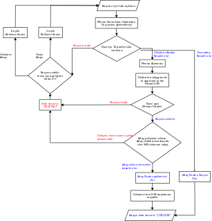

Geliştirme veya test alanında katkıcı olabilmek için bu belgeyi takip etmelisiniz.
Çevirmenlerin başvuruları Pardus Çeviri Sitesi üzerinden yapılmaktadır.
Bug raporlama ve ayıklama alanında katkı vermek istiyorsanız bugzilla
Belgeleme alanında katkı sağlamak istiyorsanız, Wiki veya Özgürlük İçin üzerinden katkı vermeye başlayabilirsiniz.
Tasarım alanında katkı sağlamak istiyorsanız, Geliştirici Listesi üzerinden bize ulaşabilir ve tasarım ile ilgili duvarkağıdı, simge seti, kullanıcı arayüzü gibi bir çok farklı alanda Pardus için hazırlamış olduğunuz tasarımları paylaşabilirsiniz.

Başvuran kişi bugs.pardus.org.tr'ye üye olur.
Başvuran kişi "Yeni Katkıcı / New Contributor" ürününde istediği bileşen için hata açar.
Hatanın başlığı "Testçi veya Geliştirici Adaylık Ad Soyad" şeklinde olmalıdır.
Hatanın "Ayrıntılar" kısmı aşağıda bulunan bilgilerin cevaplarını içermelidir:
Daha önce kullandığınız dağıtımlar nelerdir?
Ne zamandır ve hangi seviyede Pardus'u kullanıyorsunuz?
Bir özgür yazılım projesine katkıda bulunmak sizin için ne ifade ediyor?
Daha önce herhangi bir özgür yazılım projesine katkıda bulundunuz mu? Evetse, hangi projeye, ne şekilde, ne kadar zamandır?
Pardus'a neden katkı vermek istiyorsunuz?
Pardus'a haftada ne kadar vakit ayırabilirsiniz?
Kısa özgeçmişin eke eklenmesi
- Başvuru geliştiriciolmak için ise:
- Hazırlamış olduğu paket(ler)i veya harhangi bir uygulama üzerinde yaptığı değişikliği,
- Pardus hata takip sisteminde çözmüş olduğu hata var ise bu hataların bağlantılarını veya numaralarını,
- Diğer özgür yazılım projelerinde yapmış olduğu yazılım katkılarının (patch, hata çözme, paket yapımı, uygulama geliştirme) bilgilerini ve bağlantılarını vermelidir.
Başvuru sahibi başvuru sırasında sorulan soruları özensiz bir şekilde cevaplamış ise mentor koordinatorleri tarafından hatası "KARAR VERİLDİ/GEÇERSİZ" olarak işaretlenir ve Başvuru Red Hazır Yorumu yapılır.
Başvuru sahibi bu aşamada reddedildiğinde; eğer test için başvurmuş ise 3 ay, geliştirme için başvurmuş ise 6 ay sonrasında kendini geliştirdiği takdirde tekrar başvuru yapabilecektir.
Quiz soruları mentor koordinatörleri tarafından Quiz Gönderme Hazır Yorumu ile gönderilir.
Başvuru sahibi soruları çözmeye başladıklarına dair onayı buzilla'ya yorum olarak gönderir.
Onaydan yaklaşık 10 gün içerisinde başvuru sahibi cevaplarını bugzilla'da yoruma ek olarak gönderir.
Eğer başvuru sahibi bu 10 gün içerisinde bugzilla üzerinden ulaşılamıyor ise hatası KARAR VERİLDİ/GEÇERSİZ olarak işaretlenir ve Başvuru Red Hazır Yorumu mentor koordinatörleri tarafından yazılır.
Başvuru sahibi ulaşılabilir durumda ve quiz sorularını ilgili gün içerisinde göndermiş ise, cevaplar mentorlar tarafından gözden geçirilip bugzilla üzerinde yorumları yapılarak onaylanır.
Gözden geçirme olumsuz sonuçlanır ise başvuru sahibinin açmış olduğu hata mentor koordinatörleri tarafından KARAR VERİLDİ/GEÇERSİZ olarak işaretlenir ve Başvuru Red Hazır Yorumu yapılır.
Başvuru sahibi bu aşamada reddedildiğinde; eğer test için başvurmuş ise 3 ay, geliştirme için başvurmuş ise 6 ay sonrasında kendini geliştirdiği takdirde tekrar başvuru yapabilecektir.
Her mentor'un üzerinde en fazla 3 başvuru yapan kişi bulunabilacektir.
Eğer tüm mentor'lar üzerinde 3 başvuru var ise, yeni başvuru kuyrukta bekleyecek ve kuyrukta bekleyeceğine dair Mentor Atama Hazır Yorumu mentor koordinatörleri tarafından hataya eklenecektir.
Başvuru sahibine bir mentor atandığında, hata üzerinden mentor koordinatörleri tarafından Mentor Atama Hazır Yorumu yapılır, anahtar kelimeyi "mentor" olarak işaretler ve hatanın sahibini mentor@pardus.org.tr'den ilgili mentora atar.
Mentorun belirtmiş olduğu sürede bu verilen küçük işi yerine getiremez ise hatası mentoru tarafından KARAR VERİLDİ/GEÇERSİZ olarak işaretlenir ve ilgili yorum yazılır. Mentor çırağın ne kadar süre sonra tekrar başvurabileceğini de yoruma ekler. (playground svn izni kaldırılması uyarı maili mentor'u tarafından Pardus Sys. Admin'e yapılacaktır.)
İzleme sürecinin süresinin bitimi mentoruna bağlıdır.
Bu dönemde yapılan paketlerin sahibi mentor'udur.
Sürümlerin "stable" izinleri dışında izinleri adaya verilecektir. (svn izni verilmesi uyarı maili mentor'u tarafından Pardus Sys. Admin'e yapılacaktır.)
Mentor adayın olgunluğa eriştiğine emin olana kadar takip eder: #. Başvuru sahibinin yaptığı paketlerin gözden geçirilme sürecine katılır. #. Başvuru sahibinin süreklilik, doğruluk, kararlılık, iletişim gibi katkıcıda bulunması gereken niteliklere sahip olup olmadığını kontrol eder.
Başvuru sahibi adaylık sürecini geçemez ise hatası mentoru tarafından KARAR VERİLDİ/GEÇERSİZ olarak işaretlenir ve ilgili yorum yazılır. (Verilmiş olan tüm izinler geri alınır.) (svn izni kaldırılması uyarı maili mentor'u tarafından Pardus Sys. Admin'e yapılacaktır.)
Başvuru sahibi adaylık sürecini geçer ise: #. Mentor adaydan emin olduğunda, mentorluğu bıraktığını bugzilla üzerinden yorum olarak ilan eder ve hatasını KARAR VERİLDİ/ÇÖZÜLDÜ olarak işaretler.
- Geliştirici olarak kabul edilir
- stable dahil tüm svn izinleri verilir.(stable svn izni verilmesi uyarı maili mentor'u tarafından Pardus Sys. Admin'e yapılacaktır.)
- Adaylık sürecinde yapmış olduğu paketler ve diğer işler mentor'undan adaya devredilir.
Başvurunuz ilgili ekip tarafından incelenmiş, maalesef sorulara verdiğiniz yanıtlar yeterli bulunmamıştır. Ayrıca başvurunuz hangi alanda Pardus'a katkı verebileceğinizi ölçmemize yardımcı olabilecek örnek bir uygulama kodu, çözümüne katkıda bulunduğunuz bir hata, yama, vb. gibi geçmiş katkı referansları da içermemektedir. Unutmayın ki, Pardus'u kullanmak, sorunlarınızı hata takip sistemine bildirmek, listeleri takip edip listelerdeki yardım taleplerini yanıtlamak Pardus'a katkı vermenin en güzel yollarından biridir. Moralinizi bozmayın ve bilgi birikiminizin bizi ikna edecek düzeye geldiğini düşündüğünüzde tekrar başvurmaktan çekinmeyin. Bol şanslar. -- Pardus Mentor Koordinatörleri
Quiz gönderme hazır yorum:
Merhabalar,
Öncelikle x üyesi adaylığınızı kutlar ve Pardus'a katkıda bulunmak istediğiniz için teşekkür ederiz.
x ekibi üyeliği sürecinin ilk aşaması olan ve Pardus Linux Dağıtımı alt yapısı ve x süreçleri ile ilgili bilgilendirici nitelikte sorulara sahip olan sınavımızı ekte bulabilirsiniz.
Kaynaklar,
x
y
z
Kolay Gelsin,
--
Pardus Mentor Koordinatörleri
Başvurunuz olumlu sonuçlanmıştır, testçi@pardus.org.tr için gerekli izinleriniz verilmiştir. Pardus'a yapacağınız katkılarda dolayı şimdiden size teşşekür ederiz. -- Pardus Mentor Koordinatörleri
Başvuru sahibinin kuyrukta beklemesi için gönderilen hazır yorum: Şu anda tüm mentor'larımızın slotları doludur, slot'ları uygun olan mentor'lar oluştuğunda size geri dönüş yapılacaktır. Bu süre içerisinde Pardus'a yaptığınız katkılara devam edebilir ve kendinizi bu yönde daha fazla geliştirebilir ve mentor sürecinizi kısaltabilirsiniz. İyi günler, -- Pardus Mentor Koordinatörleri
Göndermiş olduğunuz cevaplar doğrultusunda size x kişisi mentor olarak atanmıştır. SVN hesabı açabilmemiz için, aşağıda bulunan bağlantı doğrultusunda elde ettiğiniz çıktıyı bize göndermeniz gerekmektedir [1]. Bu çıktıyı gönderdiğinizde http://svn.pardus.org.tr/uludag/trunk/playground/ ve http://svn.pardus.org.tr/pardus/playground/ dizinlerine yazma izinleri verilecektir. Bu aşamadan sonra size mentorunuz tarafından küçük görevler verilecektir. Bu aşamada yapacağınız çalışmalar için şimdiden kolaylıklar dileriz. [1] http://developer.pardus.org.tr/policies/newcontributor/creating-svn-account.html -- Pardus Mentor Koordinatörleri